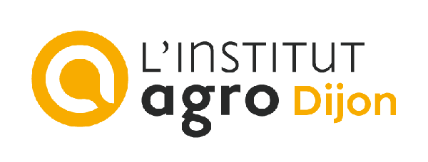
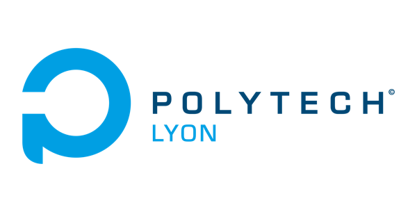

Qui sommes-nous
Une entreprise du Luberon,
les pieds dans les vignes.
Agritech Provence est née à Apt en janvier 2026, d'une conviction : les outils d'aujourd'hui peuvent rendre le métier de vigneron plus léger et plus attirant.
Fondatrice et présidente · télépilote
Julie Demarigny
Petite-fille d'agriculteurs, Julie a passé vingt ans dans la transformation digitale, chez Warner Bros. en Europe puis à Los Angeles, et chez MUFG. Revenue en Provence, elle crée Agritech Provence pour mettre la technologie au service de ceux qui cultivent. Elle vole elle-même sur chaque parcelle.
Cofondateur et directeur général · télépilote
Ugo Bondil
Ingénieur agronome et apiculteur, Ugo apporte la connaissance du vivant et du terrain.
Recherche
Nous ne travaillons pas seuls

Institut Agro Dijon
Recherche et développement avec un maître de conférences et ses étudiants : agronomie et imagerie de la vigne.

Polytech Lyon
Recherche et développement avec un maître de conférences et ses étudiants : traitement d'images et intelligence artificielle.
Conseil scientifique
Frédéric Cointault, maître de conférences à l'Institut Agro Dijon, spécialiste de l'imagerie multispectrale et des maladies cryptogamiques.
Ils nous ont ouvert leurs vignes
9 domaines et 2 caves coopératives
En 2026, des vignerons de Provence ont accepté de jouer le jeu : nous laisser voler au-dessus de leurs parcelles tout l'été, nous ouvrir leurs carnets de traitement, et partager leurs résultats, anonymisés. Parmi eux, le Château de Mille et la Cave de Louérion. Sans eux, il n'y aurait rien à montrer. Merci.
Notre engagement
100 % agriculture biologique
Agritech Provence travaille exclusivement avec l'agriculture biologique. Les données restent celles de chaque domaine ; les résultats publiés sont toujours anonymisés.